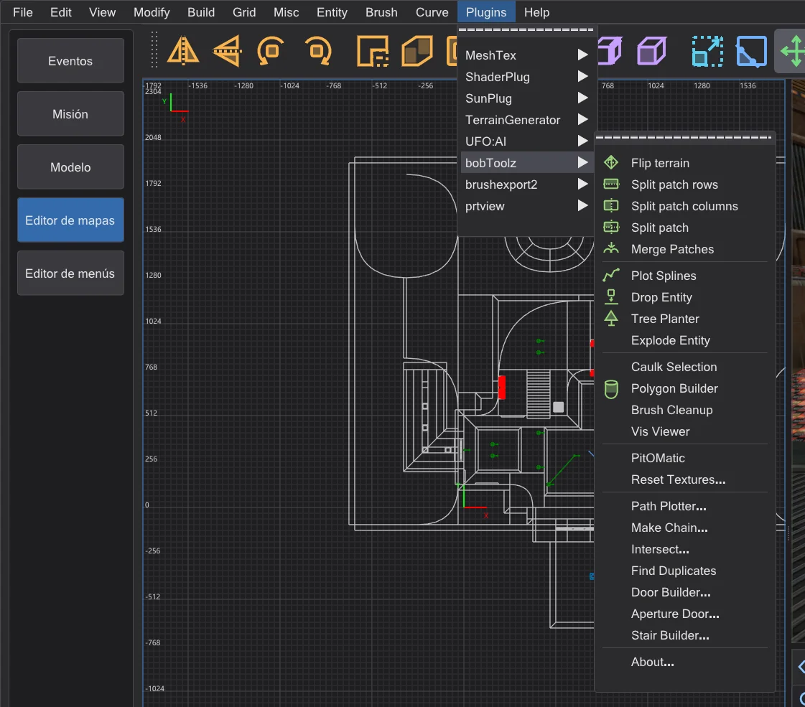
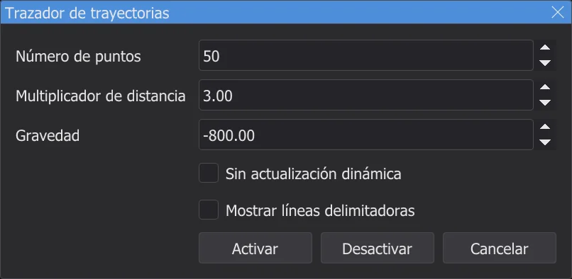
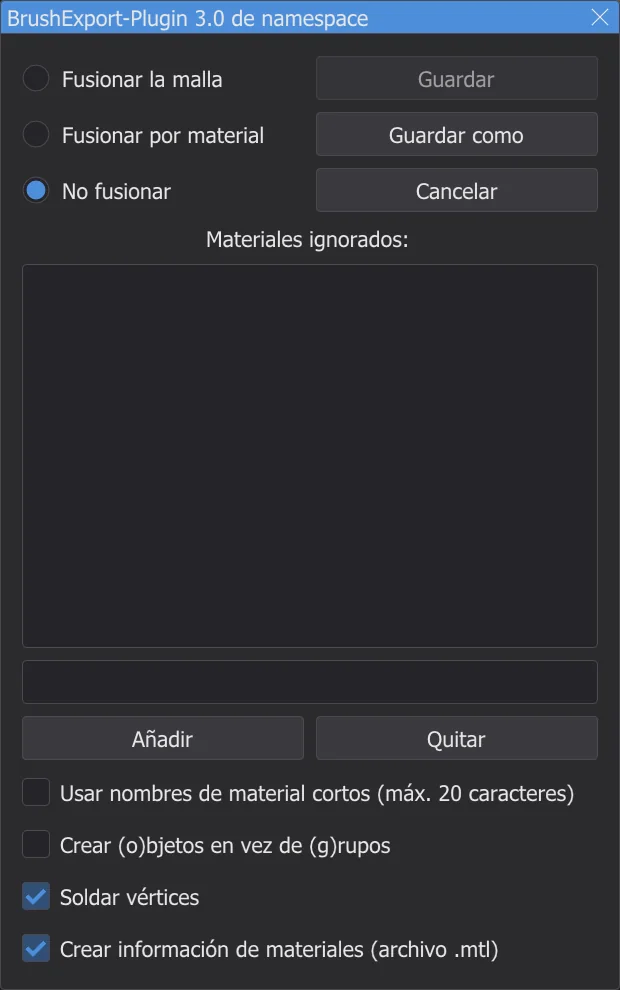
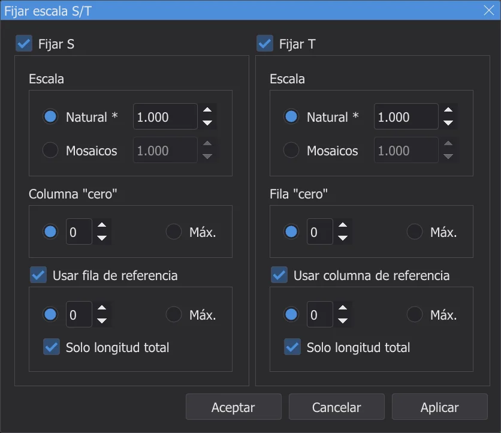

Editor de mapas: plugins
El menú Plugins tiene todos los plugins de NetRadiant-Custom (bobToolz, brushexport2, MeshTex, ShaderPlug, SunPlug, UFO:AI y prtview) con todas sus entradas y diálogos, portados del código fuente.
El menú ⟦Plugins⟧#

Las entradas conservan los nombres ingleses de NetRadiant-Custom, como los tienen allí los plugins; los diálogos están en el idioma del programa, con Términos como NetRadiant (inglés) en el inglés de NetRadiant-Custom. Cada plugin tiene una entrada About. Los mensajes van a la consola, los errores en rojo. Cada cambio que hace un plugin es un paso de deshacer.
bobToolz#
| Entrada | Qué hace |
|---|---|
| Flip terrain | Dos brushes de terreno seleccionados (prismas triangulares con una arista común): gira su diagonal común al otro lado. |
| Split patch rows / columns, Split patch | Corta el patch seleccionado en tiras a lo largo de sus filas, sus columnas o ambas. |
| Merge Patches | Une en uno dos o más patches seleccionados que comparten una arista. |
| Plot Splines | Dibuja los trayectos de las cadenas info_train_spline_main con sus puntos info_train_spline_control (mira Make Chain). |
| Tree Planter, Drop Entity | Selecciona los brushes del suelo y activa Tree Planter: cada clic izquierdo en la vista XY pone sobre ellos una entidad de data\karte\bt\tp_ent.txt, con un modelo, ángulo y escala aleatorios (tal como se distribuye, el archivo nombra modelos de árboles de Quake; pon ahí tus propios modelos). Drop Entity deja caer las entidades seleccionadas sobre los mismos brushes. |
| Explode Entity | Divide la entidad de brushes seleccionada: cada uno de sus brushes se convierte en una entidad propia con las mismas claves (no worldspawn). |
| Caulk Selection | Da a cada cara de los brushes y patches seleccionados la textura caulk. |
| Polygon Builder | Diálogo Constructor de polígonos: convierte un brush seleccionado en un prisma con el número de lados indicado; opcionalmente hueco con borde, inverso o alineado a la arista superior. |
| Brush Cleanup | Quita los planos no válidos y duplicados de todos los brushes del mapa e informa de cuántos. |
| Vis Viewer | Lee el <mapa>.bsp compilado junto al mapa (tras una compilación, o el original tras Abrir .bsp) y muestra qué hojas del BSP son visibles desde la cámara o la selección; la ventana Hojas del BSP las lista. |
| PitOMatic | Convierte un brush seleccionado en un foso mortal: triggers para el grito de caída (*falling1.wav) y para quitar los potenciadores, un trigger_hurt en el fondo. |
| Reset Textures... | Diálogo Restablecer texturas: sustituye un nombre de textura y restablece escala, desplazamiento y rotación, en los brushes seleccionados o en todos. |
| Path Plotter... | Muestra la trayectoria de vuelo de un trigger_push; mira abajo. |
| Make Chain... | Diálogo Crear cadena: construye una cadena de entidades info_train_spline_main con puntos de control, nombradas según el nombre base. |
| Intersect..., Find Duplicates | Selecciona los brushes que se cortan entre sí (en todo el mapa o entre los seleccionados, opcionalmente solo duplicados), o cada brush que duplica exactamente a otro. |
| Door Builder... | Convierte un brush seleccionado en dos hojas de puerta (func_door) con texturas de puerta y de marco de bt\door-tex*.txt, norte-sur o este-oeste. |
| Aperture Door... | Construye una puerta de diafragma (un iris de segmentos) a partir del brush seleccionado, desde parámetros o desde un contorno. |
| Stair Builder... | Convierte un brush seleccionado en una escalera: altura del escalón, dirección, estilo (Original, Bob's Style, Corner Style), textura principal y de contrahuella, opcionalmente brushes de detalle. |
Path Plotter
- 1
Selecciona un
trigger_pushque tengatarget. - 2
Plugins > bobToolz > Path Plotter... abre Trazador de trayectorias: número de puntos, multiplicador de distancia y gravedad del trayecto. Activar lo dibuja en las vistas 2D y en la cámara.

El diálogo Trazador de trayectorias con los valores de NetRadiant-Custom. - 3
Mueve el destino: el trayecto lo sigue, salvo que esté marcado Sin actualización dinámica. Desactivar lo quita.

brushexport2#

Export selected as Wavefront Object escribe los brushes seleccionados como modelo .obj, por ejemplo para continuarlos en un programa de modelado. La ventana elige cómo se agrupan las caras (Fusionar la malla, Fusionar por material, No fusionar), qué materiales dejar fuera (Materiales ignorados:, por ejemplo textures/common/caulk) y si acortar los nombres de los materiales, escribir objetos en vez de grupos, soldar vértices y escribir un archivo .mtl. Guardar como pide el archivo (la primera vez en la carpeta karte_export de la carpeta de ajustes) y Guardar vuelve a escribir el mismo archivo.
MeshTex#

MeshTex coloca texturas en patches (curvas, arcos, terreno) donde el inspector de superficies llega a sus límites. Fijar escala S/T fija la escala a lo largo de S y T: natural (como en una cara de brush, *) o como número de mosaicos, contados desde una columna o fila "cero", opcionalmente medidos a lo largo de una fila o columna de referencia. Obtener información muestra la escala del patch seleccionado y puede pasarla a Fijar escala S/T. Función general fija S y T como función lineal de las distancias de filas y columnas. Las entradas Align ajustan la textura a los bordes del patch (mínimo o máximo, estirada o encogida, o automáticamente); Help... muestra la propia explicación de MeshTex.
ShaderPlug, SunPlug, UFO:AI, prtview#
| Plugin | Qué hace |
|---|---|
| ShaderPlug | Create tag file escribe el archivo de etiquetas del navegador de texturas: cada shader recibe como etiqueta el nombre de su archivo .shader. El navegador de texturas lo vuelve a cargar enseguida (NetRadiant-Custom solo tras reiniciar). |
| SunPlug | En NetRadiant-Custom contiene ET-MapCoordinator: calcula mapcoordsmins y mapcoordsmaxs para el mapa de mando de Enemy Territory a partir del tamaño del mapa y los escribe en worldspawn con Fijar. Jedi Academy no usa estas claves. |
| UFO:AI | Herramientas para el juego UFO:AI: filtros por sus marcas de contenido (NoDraw, WeaponClip, ActorClip, StepOn, Level 1 a 8), Perform check y sus claves de worldspawn (Worldspawn, Worldspawn reset). Están porque NetRadiant-Custom las muestra para cada juego. |
| prtview | Muestra los portales de la última etapa BSP; mira Editor de mapas: compilar el mapa. |